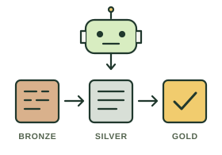
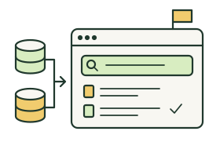
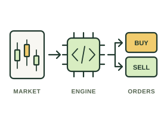
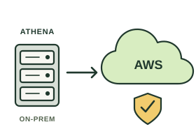

Agents build.
Bronze to gold.
Led delivery of agent-built pipelines and pioneered AI-era analytics engineering.

Led delivery of agent-built pipelines and pioneered AI-era analytics engineering.

Led the catalogue from concept to delivery for a 10,000-person trading organisation.

Led the re-architecture and delivery of the algorithmic trading platform from scratch.

Migrated the Athena risk platform from on-premises to AWS.
Amsterdam / AI & Big Data Expo 2026
Building trusted AI agents with MCP.
The architectures, controls and evidence behind enterprise AI.